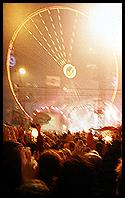
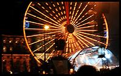
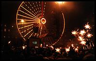
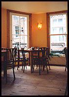
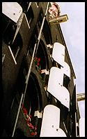

{kind=link}
{kind=link}
{kind=link}
 De Drie Graefjes, Eggertstraat 1, Dam
De Drie Graefjes, Eggertstraat 1, DamThis is your guide to where to have lunch in Amsterdam.
Amsterdam certainly has more than a few people who are completely out to lunch: it really is the Los Angeles of Western Europe, but with less sun. However, Amsterdam has a saner element hidden between the cracks, and they're having lunch.
Contents: Coffee Connection | Het Lunchcafe Dialoog | 't Doktertje | De Drie Fleschjes | De Drie Graefjes | Espresso Corner | Harlem | De Jaren | 't Papeneiland | De Schutter | Singel 404 | Cafe 't Smalle | Stoop en Stoop | De Zotte
Good for: coffee

This is probably the only decent North-American style cafe in Amsterdam. The interior is the real thing - spotlessly clean, bright, modern and white, which really sets it apart from the average eetcafe. True to the cafe's transatlantic roots, ordering a coffee or bagel involves lots of decision-making, which is great when you really want smoked-salmon and hummus on a toasted poppy seed bagel, or something just slightly different. This is definitely the place for excellent bagels and the best frothy white coffee this side of Berlin.
Good for: sandwiches
 This basement cafe next to the Anne Frank house is a great place to hide out from Amsterdam's frequently dismal weather. Once inside you get to take comfort from lots of breakfast, sandwich and bagel choices, decent coffee and friendly staff.
The cafe has a diverse international style that fits well with its inevitably touristy crowd, and is sufficiently down-to-earth for anyone to feel at home: from Scots-in-jeans with pint of beer, to Spaniards-in-cashmere with espressos. Apart from the 'Departure Times Museumboat' on the wall there are few clues which country you're in. If anything the overall effect is a more North American style of considered diversity than anything else.
Unlike the old-fashioned Jordaan bruincafes around the corner, where you settle into a cosy corner, the tiles, bright lighting and pale wood here give a more upbeat atmosphere. Fortunately the big wooden beams on the ceiling and the decoration on the wall soften the effect.
Good for: mellow afternoon drinking
 This tiny bar is a living museum piece that oozes character, along with the jazz. This, and the well-stocked bar, make it a great place to escape to from the hell of Saturday afternoon crowds on the Kalverstraat.
It could probably seat eight at tables and another eight at the bar, if nobody moved. Being this small, the conversations between pairs of tourists are almost inevitable.
Cosy old-fashioned wine bar, with a great atmosphere and lots of wine to drink.
Good for: wine
De Drie Graefjes, Eggertstraat 1, DamGood for: lunch, coffee
 De Drie Graefjes is a thoroughly modern cafe, with bright colours, excellent Italian coffee and smart-looking menus and staff. The food takes ages to arrive, which doesn't matter because the club sandwiches are outrageously good.
The upstairs room is always mostly empty and quiet, which makes it easy to forget that you're just around the corner from Dam square.
 Good for: lunch
'A massive smoked salmon and salad ciabatta please...'
This is another lovely cafe with excellent sandwiches and a nice pleasant interior, with a friendly atmosphere.
 Harlem - 'drinks and soul food', Haarlemmerstraat 77
Harlem - 'drinks and soul food', Haarlemmerstraat 77Good for: lunch, drinks
Harlem, while typically mellow, is unusual because it doesn't have a very Dutch feel, although I'm not sure why. It's probably the music, the slightly trendy food, and the suggestion that drink is important. Anyway, the food is lovely and it was a shame to have to leave - to see a film at the nearby The Movies cinema.
Good for: drinks
One of Amsterdam's few big cafes, De Jaren is a modern cafe with cool decor and a good central location. The drinks are a bit more pricey than most places, which is probably the main thing that selects the customers.
Good for: drinks
Here's another small and nice Jordaan brown cafe - the sort of place that it's nice to have as a local.
Good for: drinks, dinner
If you're looking for a real pub that's not some fake Irish effort then this is probably what you're after. Hell, you even have to order at the bar. Once you've managed to find your way in the inconspicuous front door and up the stairs, you find yourself in the sort of big bar that still manages to have a relaxed and dingy atmosphere when it's sunny outside. In the evening, lots more people arrive and the place gets much livelier.
Good for: lunch, coffee
This is the archetypal down-to-earth Dutch lunch cafe, with unpretentious decor, slow service, and a huge choice of great sandwiches. There isn't much room, so the tables fill up predictably quickly, given the handy location.
 Cafe 't Smalle, Egelantiersgracht
Cafe 't Smalle, EgelantiersgrachtGood for: drinks
Small museumpiece Dutch brown cafe, with lots of character. Apart from being a nice place to stop for a drink, the bar is really interesting, because it's so low - below waist height.
Good for: dinner
A rare find - a decent eetcafe just a stone's through from Leidseplein. As you'd expect from the location, it's usually packed. What you might not have been expecting is good-value food and a nice atmosphere.
Good for: beer, food
Classic Belgian beer cafe, with lots of character and lots of beer! Fortunately, you can order hearty Belgian food so you won't have to interrupt an afternoon's drinking just because you got hungry. Another plus is that it's relatively hard to find (buy a map) so you stand a good chance of getting a seat.
{kind=link}
{kind=link}